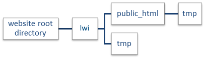

LSD Web Interface
The manual explains the configuration and the usage of the LSD web interface (LWI). LWI allows LSD models to be operated using a standard HTML web browser interface and to be available to users in the open internet, without the need to install LSD in the users’ computers.
1. Introduction to what is the LSD Web Interface.
2. Installation of the LSD web server.
3. Customizing the LSD Web Interface.
4. Configuring, running and analyzing results of LSD models using the web interface.
This manual presents the user-friendly, web-based interface to LSD (LWI). LWI makes a basic subset of the LSD tools available for web browser users, allowing the configuration, execution, and analysis of results produced by LSD models and the export of such data. LWI web front-end is compatible with any computer platform equipped with a modern HTML5 browser and can be made available in closed (intranet) or open (internet) networks.
As a web interface to existing LSD models, LWI does not add new functionalities to them. However, it allows a simplified access to LSD models to users which lack the technical knowledge to operate the full LSD interface, or use a platform (smartphone, tablet etc.) in which LSD is not available for installation. LWI can be integrated to any HTML-based web server platform. LWI, per se, does not provide accounts or persistent storage to users, which can be provided by the host web platform.
This manual presents the configuration of LSD Web Interface (LWI) back-end (server setup) to provide the web-based interface to LSD models to the end users. LWI web back-end is compatible with any web server platform equipped with a modern HTTP server supporting PHP server scripting. In principle any relatively recent Linux or Windows 64-bit server is adequate for hosting LWI.
This section of the manual is not intended to be a guide to unexperienced server operators, as a minimum knowledge of server administration is required. Some experience on operating in the command line is also a pre-requisite.
This section is organized in three subsections. Initially, we describe the minimum hardware and software requirements for the server environment. The second subsection presents the detailed instructions to install and configure the server. Next, the web software configuration is explored. The fourth subsections details the LWI software installation. Finally, the last section discusses some maintenance issues associated with the operation of the LWI server.
The LWI server must be able to efficiently execute a complex, computed intensive simulation process for each LWI user session actively running a simulation (an “executing session”). Each LWI executing session must get sufficient server resources to produce an adequate experience to the end user. Such requirement defines the specification of the hardware recommended for the server. On the software side, there are no strong requirements on the server configuration, being both Linux and (modern) Windows servers supported. Mac servers are supported only as a test platform. No additional special/proprietary software is strictly required by LWI.
LWI can be operated on any modern server platform. The instructions below assume a 64-bit Intel/AMD server for convenience. Different platforms would require a recompiled version of LWI executables (supported on any platform with a GCC compiler available). LWI can be operated in production servers, supporting multiple simultaneous users, but also in small-scale test/development servers.
LWI can be deployed on any web server supporting HTTP 1.1. This includes Apache, Microsoft IIS and others. However, the recommended (tested) configuration is based on Apache HTTP Server version 2.4, which is available for Linux, Microsoft Windows and Apple macOS server platforms, among others. For downloading the appropriate version of Apache, please visit https://httpd.apache.org.
Additionally, the LWI requires support to PHP version 5.6 (or newer), which is natively supported by both Apache and Microsoft IIS on Linux and Windows servers. For downloading the appropriate version of PHP, please visit http://php.net.
The LWI server typically operates on non-critical and non-sensitive data. On top of that, there is no long-term data storage of user data. Also, the level of user access to the server is minimal, exclusively done through HTTP (web pages) and PHP (simulation configuration results files). This should alleviate the security requirements when the server is used exclusively for LWI.
We assume the basic operating system is installed using the default installation options. The instructions require a server supporting a bash-like shell, typically any Linux distribution or a recent Microsoft Windows 10+ version with the Windows Subsystem for Linux (WSL) installed. In the instructions below Ubuntu 16.04 LTS and CentOS 7.4 servers are used as examples but the installation steps can be adapted for installation on any server platform and distribution.
If a Linux server is selected, please install the server software following the appropriate instructions for the selected distribution.
If a Windows server is selected, please install the last version of Microsoft Windows Server. Both Apache and PHP can be installed in Microsoft Windows servers in two modes: native Windows or using the Windows Subsystem for Linux (WSL). For the unification of the setup instructions, WSL mode was chosen. However, the steps to setup using native mode are quite similar and easily adaptable and should be the preferred approach in most cases. A regular Windows 10 desktop (build 1709 or newer) may be used to deploy a test server (small capacity) following the same instructions. Please enable WSL before proceeding.
Recent macOS computers (version 10.13 or newer) already come bundled with pre-configured versions of Apache and PHP. macOS is not supported for production servers.
For Ubuntu and Windows WSL servers, install the required packages individually using the bash terminal:
sudo apt install apache2 php
On CentOS, the installation command is:
sudo yum install httpd php
macOS servers already come with the packages installed.
Next (re)start the web server. On Ubuntu and Windows WSL:
sudo service apache2 restart
On CentOS:
sudo systemctl start httpd.service
sudo systemctl enable httpd.service
Now we have to install LWI files in the web server. LWI files are stored in a single subdirectory tree, inside the directory used by the HTTP server to host the website files. In the case of an Apache on Ubuntu, Windows WSL or CentOS configuration, the HTTP server directory for the website is /var/www. This location may be different according to the adopted combination of HTTP server and operating system/distribution.
Each LWI installation supports a single LSD model under a unique baseline configuration (see below). If different models or configurations must be supported, it is necessary to configure multiple virtual web servers (in a single physical server), installing one independent LWI instance (different directory) for each virtual server. Please refer Apache documentation on how to set up virtual web servers.
To start, please copy the provided LWI subdirectory inside your LSD installation directory (normally at ~/Lsd/lwi) to the appropriate web server directory. On Ubuntu, Windows/WSL and CentOS use the following terminal command:
sudo cp -R ~/Lsd/lwi /var/www/
In macOS:
sudo cp -R ~/Lsd/lwi /Library/WebServer/Documents/
The structure of LWI subdirectory tree is the following:

In lwi subdirectory are kept all PHP-only files (the ones not directly accessed by the user browser), including executable and configuration files. The lwi/tmp subdirectory holds session-related PHP server temporary files, deleted periodically (check the Maintenance section). The lwi/public_html subdirectory holds the files visible to the user browser. The lwi/public_html/tmp subdirectory holds the session-related, temporary user files (downloaded/uploaded simulation configurations and simulation results), also deleted periodically. The user/group associated to the HTTP and the PHP server (www-data in Ubuntu, apache in CentOS, etc.) must have read-write to the entire lwi subdirectory tree (the default configuration).
The provided files must yet be set with all required file permissions/ownership for a typical setup. Usually it is enough to adjust the ownership. For Ubuntu and Windows use:
sudo chown -R www-data:www-data
/var/www/lwi
sudo chmod g+w /var/www/lwi/tmp
sudo chmod g+w /var/www/lwi/public_html/tmp
For CentOS, because of SELinux, a longer setup is required:
sudo chown -R apache:apache /var/www/lwi
sudo chmod g+w /var/www/lwi/tmp
sudo chmod g+w /var/www/lwi/public_html/tmp
sudo semanage fcontext -a -t httpd_sys_content_t "/var/www/lwi(/.*)?"
sudo semanage fcontext -a -t httpd_sys_rw_content_t
"/var/www/lwi/tmp(/.*)?"
sudo semanage fcontext -a -t httpd_sys_rw_content_t
"/var/www/lwi/public_html/tmp(/.*)?"
sudo restorecon -F -R -v /var/www/lwi
sudo setsebool -P httpd_builtin_scripting on
sudo setsebool -P httpd_can_sendmail on
sudo setsebool -P httpd_execmem on
sudo setsebool -P httpd_ssi_exec on
For macOS:
sudo chown -R :_www /Library/WebServer/Documents/lwi
It is now necessary to configure the Apache web server to use LWI as the web entry point (virtual web server). Use the following commands to adjust the entry point in Ubuntu and Windows/WSL servers (replace 000-default by the name of your configuration, if changed from the installation default):
sudo cp /var/www/lwi/lwi.conf
/etc/apache2/sites-available
sudo a2dissite 000-default
sudo a2ensite lwi
sudo service apache2 reload
For CentOS, the command is:
sudo bash -c 'cat /var/www/lwi/vhost.conf
>> /etc/httpd/conf.d/vhost.conf'
sudo systemctl restart httpd.service
If you have a more complex server setup (more than one virtual web server in a single domain, for instance), you may need to adjust the files lwi.conf or vhost.conf to your needs.
In macOS the setup is more complicated. Edit the Apache webserver configuration file in nano (text editor) to enable PHP and use LWI as the default website:
sudo nano /etc/apache2/httpd.conf
In nano, search (CTRL+W) for the line starting with #LoadModule php7_module and delete the # character from it, uncommenting the line.
Still in nano, please search (CTRL+W) for the line containing DocumentRoot "/Library/WebServer/Documents" (or another path) and replace it with:
DocumentRoot "/Library/WebServer/Documents/lwi/public_html"
Now find the line containing <Directory " /Library/WebServer/Documents"> (or another path, should be below the previous one) and replace it by:
<Directory "/Library/WebServer/Documents/lwi/public_html">
Save the configuration and close nano (CTRL+X, Y, ENTER). Finally, start the webserver:
sudo apachectl start
If server is already running, simply reload it so the new configuration is used:
sudo apachectl restart
Your LWI server should be up and running now. You can test it using a browser in the same machine using the address http://localhost. You can also access the server from other machines connected in the same local network by using the server IP address (or the DNS name, if you have one assigned). To get the server IP address(es), type the command:
ifconfig | grep "inet addr"
You can then access the server typing (one of) the IP addresses in your browser (as in http://192.168.1.152, for example) in any machine connected in the same local network.
Some servers may have the IP ports below 1024 unavailable for non-system applications like Apache (and you can access the server only in the same machine). This is a known limitation of Windows computers. In this case, a port above 1024 (8080, for instance) must be used.
LWI offers a link for the users to post messages to the site administrator. To enable this functionality in a Linux environment, the sendmail package (or a more recent equivalent, like postfix) must be configured in the server.
The LWI server usually requires no particular maintenance care if set up properly. Except for the points discussed below, for all maintenance tasks on the LWI server, like backups, software updating, security audits, storage clean-up etc., please follow the usual (basic) standard web server guidelines.
The only special maintenance task in a LWI server is to manage temporary storage utilization. This is important as, per the default LWI installation, over time the server may accumulate temporary files from the user sessions. If nothing is done, the server may eventually run out of storage space, even if at a very slow pace. The LWI server accumulates temporary files in just two subdirectories:
/var/www/lwi/tmp
/var/www/lwi/public_html/tmp
Those are paths on an Apache on Ubuntu or CentOS setup. For other configurations please replace /var/www with the appropriate subdirectory.
LWI temporary files are used/valid only while the corresponding user sessions are active and cannot be retrieved by the users after that. As PHP sessions are usually configured to last less than 24 hours (the default is 3 hours), it is recommended that files older than 2 days to be permanently deleted. In most Linux configurations, the temporary file clean up can be performed automatically using a cron job. Of course, other similar tools can be used, in any platform. To configure a cron job, please first create the following script file in the server and name it lwi-cleanup:
nano lwi-cleanup
Enter the following lines and save the file in nano (CTRL+X, Y, ENTER):
#!/bin/sh
find /var/www/lwi/tmp /var/www/lwi/public_html/tmp -type f -mtime +2 -delete
Please adjust the directory paths to your particular configuration, if needed.
Then, make the script file executable using:
chmod a+x lwi-cleanup
Finally, copy the script file to the cron daily directory:
sudo cp lwi-cleanup /etc/cron.daily
The LSD Web Interface (LWI) can be customized to any existing LSD model. The customization consists in (1) producing an adequate executable version of the model, together with a full baseline configuration, (2) selecting which Parameters and Variable initial conditions should be exposed for the configuration by the user, as well the allowed value ranges, (3) defining for which result Variables the model’s output should be presented to the user, (4) installing the produced configuration in the LWI server, and (5) customizing the LWI server for the model. The customization is performed using standard LSD commands and configuration files, as described below.
The default configuration of LWI after the installation of LSD brings the Schumpeterian Competition Model by Nelson & Winter (1983) (available in the Example Models group of the LSD Model Browser, under Literature Models/nw2004). It is strongly recommended the user test the LWI server configuration with this configuration before trying to customize it to other models.
The first step of making a LSD simulation model available for use with LWI is to create a baseline configuration file (.lsd extension) using the LSD Browser. The baseline configuration is automatically loaded whenever a LWI user starts a session or reset it to the defaults.
Please ensure that the chosen configuration is robust to multiple simulation runs, using different random number generator seeds, to avoid the LWI user sessions to crash. Also ensure the configuration is set for a single simulation run (if multiple runs are set, just the last one will be presented). Save your configuration file in the LSD Browser with the name lwi.lsd. using the menu command File>Save As.
The second step is to produce a ‘No Window’ version of the LSD model program. This is an executable file named lsdNW (plus a .exe extension in Windows, or an x attribute in Linux/macOS) which will be invoked by the LWI server every time a LWI user starts a simulation. The ‘No Window’ model program can be generated in LMM, by using the menu command Model>Create 'No Window ' Version.
Please note that the model program must be generated in a computer using the same operating system version as the LWI server (or in the server itself). If this is not possible (e.g., it is a headless server), it is possible to compile the ‘No Window’ model program using a terminal session in the server, see the instructions here.
The Parameters and Variable initial conditions which are to be exposed for the LWI users to configure must be defined in a sensitivity analysis file (.sa extension) using the LSD Browser. Parameters and lagged Variables not included in this file are not presented to the user and always assume the values defined in the baseline configuration (lwi.lsd).
To create the sensitivity analysis file, first make sure the baseline configuration is loaded in the LSD Browser using the menu command File>Load. Next, for each Parameter and lagged Variable to be included, select the desired element in the LSD Browser list box, and choose command Model>Change Element. Now, in the Change Element window, click on the Sensitivity button. Finally, in the Sensitivity Analysis window, enter the minimum and the maximum values for the Parameter or lagged Variable, separated by a space, select the Round to integer option if the element is an integer number, and click on OK. Repeat this procedure until all elements to be exposed to the user have their ranges defined. To see the list of already selected elements, use the menu command Run>Show Elements to>Sensitivity Analysis.
When all required Parameters and Variables are set, save the sensitivity analysis file using the command File>Save Sensitivity. The name of the saved file must be lwi.sa.
The Variables’ time series which will be presented to the LWI users must be set to be saved in the lwi.lsd configuration file. All time series regularly marked to be saved in the LSD Browser are made available to the users. Select the desired Variable in the LSD Browser list box and use the menu command Model>Change Element to select the Save checkbox in the Change Element window.
After selecting all Variables to be saved and presented to the LWI users, save the baseline configuration under the name lwi.lsd using the LSD Browser command File>Save As.
When all the required configuration files are ready (lwi.lsd, lwi.sa and lsd_gnuNW[.exe]) in the model home directory, copy them to the base subdirectory of LWI in the server. For Ubuntu, Windows/WSL and CentOS, use the following terminal commands (see above for details on the server directory structure):
cd ~/Lsd/Work/[YOUR_MODEL_PATH]
sudo cp lwi.lsd /var/www/lwi
sudo cp lwi.sa /var/www/lwi
sudo cp lsd_gnuNW /var/www/lwi
These three files will replace the previous model and configuration used by LWI. Finally, reload the web server so it can start using the new files. On Ubuntu and Windows/WSL use:
sudo service apache2 reload
For CentOS:
sudo systemctl restart httpd.service
For macOS:
sudo apachectl restart
Launch the browser in the appropriate address (see here for details) and check the LWI operation for your model.
Almost everything in the LWI server can be customized. However, other than basic personalization, changing the HTML/PHP code require reasonable web programming skills, and should be unnecessary for most applications.
The main file to be customized in LWI is lwi/public_htnl/index.php. Basic customization can be performed by changing only the text marked between the special comment marks (starting with <!-- ### LWI ###). The pre-set change points include adding:
·
Name of the model, in two versions. For large
screen devices, the name used is the one marked by:
<!-- ### LWI ### ADD THE LONG
NAME OF YOUR MODEL HERE -->
For narrow screen devices, change the text following:
<!-- ### LWI ### ADD THE SHORT
NAME OF YOUR MODEL HERE -->.
·
Welcome message. Several lines of (HTML
formatted) text can be added following the mark (the existing message can be
removed):
<!-- ### LWI ### ADD YOUR WELCOME
MESSAGE HERE -->
·
Copyright link. Add a website and a name for the
holder of the copyright after the mark:
<!-- ### LWI ### ADD YOUR
COPYRIGHT LINK HERE -->
·
Copyright and no-warranties messages.
Define your copyright conditions and limit responsibilities following the mark:
<!-- ### LWI ### ADD YOUR COPYRIGHT
AND WARRANTY MESSAGES HERE -->
Be careful on not changing the contents outside the comment-mark regions. Please reload the web server after any change (follow the instructions above).
LSD Web Interface (LWI) requires that users are at least familiar with the model being used. The user is supposed to have at least some basic knowledge of the model structure and its main parameters and variables to fully profit from LWI. All names used in LSD for the model’s parameters and variables are preserved in LWI.
This section is organized in five subsections, mirroring LWI software organization. Initially, we introduce LWI Navigation panel and how to select the desired operating mode (or page). The second subsection presents the Configuration area and how to set-up the parameter values available to the user and the management of user’s custom configurations to/from local storage. Subsection three explains the usage of the Execution area which allows the user to control a simulation run and provides status about the execution. The fourth subsection covers the Analysis area which offers options to generate data tables and graphical plots from the simulation results. Finally, the last section presents the data export area which allows the user to download the produced results time series.
LWI is organized in several interaction areas or “cards”, which can be scrolled or directly reached using the Navigation panel. When initiating a new LWI session, the Navigation Panel is presented together with the Welcome area. In devices with a narrow screen, like smartphones, the user has to click in the “☰” symbol to open the Navigation panel.
The options in the Navigation panel correspond to the four main LWI areas, presented below, plus the Welcome, Reset, Help and Contact areas. User can switch sections by simply clicking in the name of the desired section in the navigation panel or by scrolling the interface.
The Reset page offers a command to discard any changes made by the user, including configurations, running simulations or results data, and initiates a new LWI session. All configuration values previously entered by the user are lost. Any executing simulation is aborted and the results, lost.
The Help page presents a summary of this manual.
The Contact page offers a channel between the user and the LSD web server administrator.
The Configuration area allows the user to control many of its parameters, initial conditions and general simulation settings. Each set of values to all the required parameters, initial conditions and simulation settings is defined as one model configuration. Every time the user initiates a new LWI session, the default model configuration is automatically loaded. From the Configuration page, the user can change any value, load a saved configuration or save the current configuration to her device.
Configuration values can be of two types: real (floating point) or integer numbers. All values have predefined ranges (maximum and minimums or a set of options) and the user is not allowed to input values outside these ranges (an error message is produced). Below you have a description of the available configuration options. Please note that not all combinations of configuration values may be adequate for the proper model operation. If unexpected results are obtained after changing several values at once, please try to restore some of them to the default configuration (by pressing the Reset button besides any changed value) and execute the simulation again.
The Configuration area is divided in two areas: the configurable item list, divided in two groups, and the command buttons. Model parameters are predefined and fixed values that are used to compute the model equations and define initial conditions to some variables. For instance, the user can change parameters to modify simulated agent’s behavioral rules or the applicable market rules. Simulation settings are values defining the execution of the simulation model.
At any moment the user has the option to download the current model configuration. The downloaded configuration is saved to the user’s computer disk/storage as it is not possible to save it in the LWI server. It is important to regularly save any changes made to the default configuration, as any unsaved information is irreversibly lost whenever the user session expires or is reset (by clicking on Reset Session in the Reset section or closing the user browser). To download the current configuration, simply click on Download in the Configuration area. Depending on the browser used, a dialog window may open, asking for the destination of the configuration file to be downloaded. Configuration files have the “.csv” extension (comma-separated text file).
Any existing configuration file, previously saved using the Download option, can be loaded at any time, by clicking on Upload. A dialog window will ask for the file containing the saved configuration, with the “.csv” extension.
Clicking on Reset All button replaces the current configuration values with the default ones. Be careful to use it if you have configuration changes to be saved, as the existing values are lost. If required, click on Download before using this option.
The Execution area controls the execution of the simulation model in the LWI server. Model execution can take from a few seconds to several minutes, according to the selected configuration, in particular the chosen number of simulation time steps. The Execution area is divided in two subareas: the Status box and the command buttons.
The command buttons control the simulation model execution at the remote server. As soon as the user finishes the configuration of the model in the Configuration area, it is possible to start the execution by clicking on Start. At any time the user may interrupt the simulation by clicking on the Abort button. Stopping the execution before the Status box shows Simulation completed aborts the simulation and no data is saved for analysis.
While the execution is going on, Simulation running is show in the Status box, together with the elapsed time. User can execute only one simulation instance at a time. If there is any error preventing the simulation execution to complete, the status box will show Simulation error, the execution will be aborted, and no data is saved for analysis. User can click on the Log button to check the causes of the failure.
After the execution of the simulation model, the Status box in the Execution area will show Simulation run complete, and the produced time series will be available for analysis in the Analysis area. The area is composed by the time series list, the option selectors, and the command buttons. Please make sure your browser is configured to allow the LWI website to open new browser windows/tabs when using the commands in this area.
The user can select one or more items in the time series list to be used when the command buttons are clicked. Clicking once selects the time series and an additional click unselects it.
By default, the commands in the Analysis page operate over all simulation time steps, from t = 1 to the number of time steps defined in the Configuration area. The user has the option to restrict the range of time steps to use in the analysis, by changing the default values in the Selected Time Steps box.
The Scale box provide configuration to the scaling of the vertical axis of time series plots. The Automatic option uses auto scaling to plot the entire data range present in the series. The Manual option allows the user to select the minimum and maximum values for the vertical axis plot. The Log option uses a logarithmic scale for the vertical axis and applies the natural logarithm to the results for the other options.
Clicking on Statistics button creates a new browser window showing some descriptive statistics for the selected time series, including the mean, the standard deviation and minimum and maximum values. Clicking on Data button creates a new browser window containing a table with the selected time series in the columns and the time step values in the rows. At least one and up to 15 series can be selected at a time. However, multiple data windows may be open at any time.
Clicking on Plot button creates a new browser window with the selected time series plots. The horizontal axis represents the simulation time steps and the vertical axis, the selected series values. At least one and up to 15 series can be selected at a time. Multiple plot windows may be open at a time.
After a LSD simulation is successfully executed, the user can download the entire results data as a text-formatted file in comma-separated format (.csv). This file can be directly imported in any numerical analysis software, like spreadsheets or statistical packages. The Export area is composed by the Information boxes and the command buttons. The information boxes summarize the details about the available data which can be downloaded.
As soon as the simulation execution is finished, the results data file can be downloaded to the user’s computer disk/storage. It is not possible to permanently save simulation results in the LWI server so it is important to save relevant results before they are irreversibly lost whenever the user session expires or is reset (by clicking on Reset Session in the Reset area or closing the browser). To download the available results, simply click on Download. A dialog window may open, depending on the browser used, asking for the destination of the data file. Results files have the “.csv” extension.
LWI results data files are comma-separated values text files (CSV format). Columns contain single variables while lines represent variables values at each time step. However, the first line has a special meaning, being the first time step values located in the second line and so on. The first line contains the columns headers with the names of the variables below.